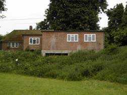

Our Coombe Farm Campsite is located just outside Central London at Addington on the A212; it stands on 2.5 Acres, ideal for weekend training camps or as a base for exploring and provides easy access to central London and the South Coast.
Coombe Farm offers indoor accommodation for 20 Cubs or Scouts along with a toilet and shower block. If, however, you wish to hold a Troop or Patrol camp then there are plenty of camping areas available. The Farm also provides the perfect place to hold your Patrol Camps as it is great for wide games, fire-lighting, backwoods cooking, etc.

For more information on the campsite take a look at the brochure. To book the campsite please fill in the booking form. If you are interested in either booking Coombe Farm or finding out more details then please e-mail campsite@westminsterscouts.org.uk, alternatively call 02088 305223 or 07816 453221.